Overview
An agent that plays for tens of thousands of steps cannot hold its history in context. The usual answer is a text log that the model greps. A log records what was done and what the state was; it does not record what the agent saw. MFM keeps the log and adds the rest: the frame each plan entry opened on, the state, the action and the outcome, stored as a directory per episode and indexed so that the model can ask for them by step, by place, by tag, by action or by text.
The memory is read with shell commands inside the coding agent's own turn. Nothing is embedded and nothing is retrieved by similarity. What the model knows beyond its weights is a file it can open, and what it learns is a file it wrote, which makes both inspectable after the run.
Episodes with frames
One episodes/ep_NNNNNN/ per plan entry: the frame it started from,
state.json, action.json, outcome.json, and a row
in index.jsonl.
The agent's own files
mine/ holds what the model writes for itself: notes.md and
GUIDE.md (semantic), procedures/ (procedural), and
working.md, the plan shown every turn (working).
Carry across lives
Earlier lives are linked under previous/life_i/. The contract says where
they are. Reading them is the model's act.
Video
Explore the memory
A recorded run, replayed. Press Play: the run's video plays on the right, and the memory on the left grows with it, step by step.
About this replay
The memory is shown as the harness and the agent wrote it: the rows of
index.jsonl, the map, the log, and the notes in mine/. Pause or
move the step to look at any moment. A query runs over the memory as it stood then, with
the rules of the agent's own tool. Everything here is the record of one run, exported by
scripts/export_demo.py. Nothing is simulated and no model is called.
-
The index is a file, and the query is a filter. MFM computes no
embeddings and ranks nothing.
index.jsonlhas one row per closed episode, andtools/episodes.pyselects rows by step range, by distance from a point, by tag, by action, or by text found in the episode's files. Filters combine with AND, and results come back in the order they were recorded. -
The query box runs a port of that tool. It was checked against this
run: each
episodes.pycall the agent made was re-run over the index as it stood at that turn and compared, line for line, with the output the run recorded. - Replaying the harness's files is exact. The index, the grid and the log are append-only and every row carries its step, so the memory at step s is the rows written by step s.
-
The agent's own files are rebuilt from its patches. The run keeps
only the final
mine/files. Their history here comes from theapply_patchcalls in the session record, and is shown only when replaying those patches gives back the final file exactly. - The video is the run's own recording, one frame per step. The page takes its step from the frame on screen, so the memory on the left is always the memory at the moment the video shows.
- Frames are reduced. The stored frames are PNG; the page shows JPEG copies no larger than 320×180. Recorded command output is cut at 6,000 characters. Reference and skill files, and images the agent made, are listed and not included.
-
The tool differs between runs. Each run carries its own copy of
tools/episodes.py, and the query box accepts the flags of the copy the chosen run had. Where a run carried the memory of earlier lives, the export has the index of those lives and not their episode files, so--previousreturns their rows without the harness notes. - One run. Each entry in the list is a single recorded life. It shows how the memory is built and read, and says nothing about how often the agent succeeds.
Query the memory run the agent's own search tool over the memory at this step
--near
This run had no query tool, so the box is off. It is the flat-retrieval ablation:
the harness took away tools/episodes.py and the recall block of the prompt, and
the agent searched index.jsonl and the log with its own shell commands
(sed, rg, tail), which are in the Turn tab.
What the memory is
The tree below is the workspace of a real run at step 26,654, the turn after the agent died to a piglin brute in the Nether. Files marked harness are written by the store and never edited by the model; files marked agent are written by the model inside its turn.
memory/
AGENTS.md harness the brief: tools, memory layout, safety
logs.txt harness append-only log, 12,483 lines at this step
index.jsonl harness 1,392 rows, one per closed episode
grid.jsonl harness spatial grid rows
episodes/ep_000000 .. ep_001391/
observation/image.png harness the 320x180 frame the episode opened on
state/state.json harness position, vitals, hotbar, inventory, goals
action.json harness the plan entry executed
outcome.json harness moved, inventory delta, events, notes, tags
previous/ harness the carry
index.jsonl merged index of the carried lives
life_1/ 2,787 episodes, its logs.txt, its mine/
life_2/ 3,083 episodes, its logs.txt, its mine/
tools/ harness episodes.py (queries) zoom.py (crops)
references/ skills/ harness read on demand
mine/ agent carried to the next life
digest.md notes.md working.md
procedures/*.py scripts the agent wrote and calls as actions
reflexes/*.py scripts that run while a plan executesFour operations at one real step
Record
The episode that ended in the death is ep_001391: the frame (a brute and
a raised shield), the state (health 1.5), the plan entry, and the outcome, in which the
whole kit is lost.
Index
The store appends one row to index.jsonl. Steps, position, tags, action
kind, summary, note and events are searchable; the image and path are references that
the tool opens and never matches on.
Retrieve
The agent asks for the last sixty steps as a contact sheet, then for the stair entrance near its surviving portal, then for the first frames at spawn. Each query carries the question it was for.
Consolidate
One patch in the same turn: a bullet in digest.md, a forensics bullet
in notes.md citing the episode, and working.md rewritten as
the recovery plan.
$ ./tools/episodes.py --steps 26594 26654 --sheet /tmp/death_26654.png \
--q 'What killed us despite holding a shield, and where were the attacker and support?'
ep_001387 steps 26592-26612 tags=inventory_changed,damage action=pillar_up
ep_001388 steps 26612-26613 tags=note note: pillar_up: 3 cobblestone under the feet
ep_001389 steps 26613-26620 action=sneak+use
ep_001390 steps 26620-26621 action=sneak+use+camera
ep_001391 steps 26621-26654 tags=inventory_changed,note note: YOU DIED at (-429, 46, -791) ...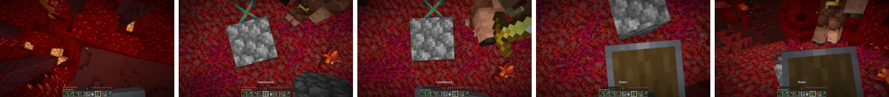
ep_001387 to
ep_001391, as stored.Looking back changes the plan
Two tools put a stored frame in front of the model. zoom.py crops the current
view. episodes.py --then-now writes a remembered frame beside the live one,
from this life or from an earlier one.
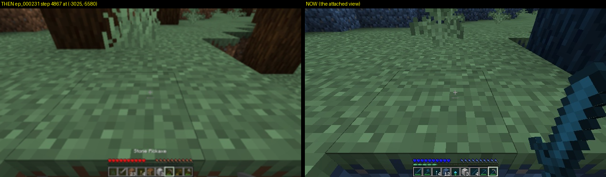
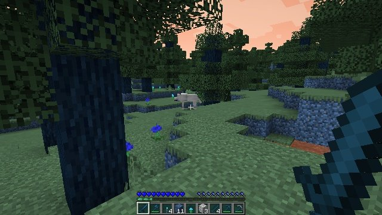
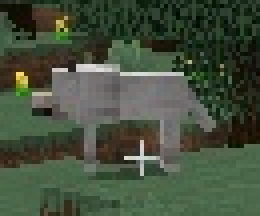
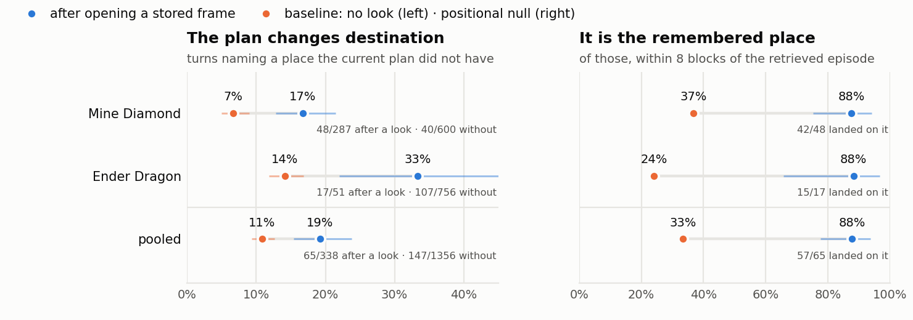
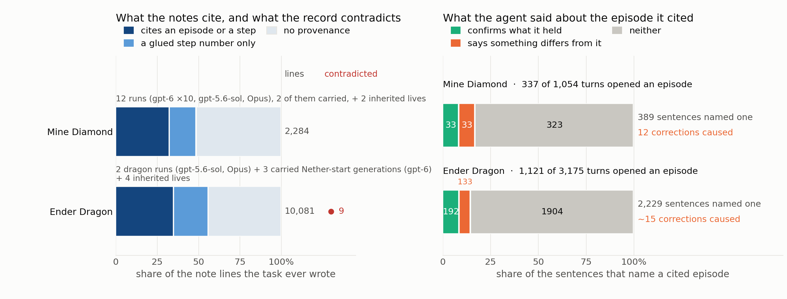
Benchmarks and arms
Minecraft (MCU)
Two long-horizon tasks scored by milestones. Mine a diamond from scratch has 10 milestones under a 12,000-step budget. Kill the Ender Dragon adds 14 more, through obsidian, the Nether, blazes and endermen, to the End.
KiCad
Twenty-four circuit design and editing tasks in one desktop application, driven by screenshots, mouse and keyboard. Rewards come from the saved schematic and netlist.
One harness, one flag
Every arm of a benchmark runs on the same harness and differs by a single flag. The engine, macro set, perception, caps, knowledge text and step budget are identical across arms.
| Arm | Memory |
|---|---|
| Direct | none: one memoryless call per step |
| Logbook (PRO-LONG) | append-only text log, grep |
| VISTA | one thread with play and inspect tools, checkpoint handoff |
| MFM | the log, plus episodes with frames, the index, mine/, and the carry |
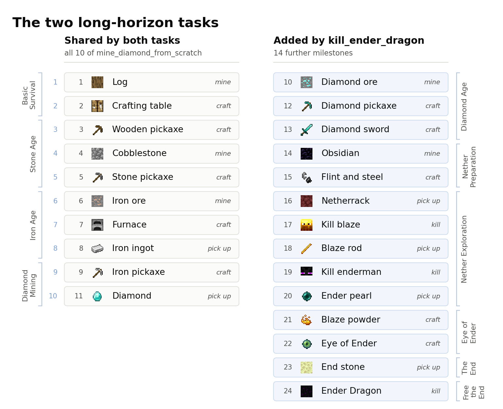
Results
Minecraft: milestones reached
| Method | Mine Diamond (of 10) | Ender Dragon (of 24) | ||||
|---|---|---|---|---|---|---|
| gpt-6-astra | gpt-5.6-sol | opus-5 | gpt-6-astra | gpt-5.6-sol | opus-5 | |
| Direct | 0 | 2 | 6 | 6 | 6 | 6 |
| Logbook | 9 | 8 | 8 | 15 | 12 | 9 |
| VISTA | 10 | 9 | 9 | 16 | 11 | 8 |
| MFM | 10 | 9 | 7a | 16b | 9 | 9c |
Single runs, full length. The GPT columns, where every arm runs on codex, are the like-for-like comparison; the Opus column mixes Claude Code and codex across its rows. a The run ended at 9.2k steps on an API error. b This run carried two prior lives; no from-scratch MFM run on this model exists. c 912 of 1,068 turns were session-limit no-ops. Dragon runs ended at different step counts (wall clock, memory, or API limits); the figure below cuts them at a common 36k steps.
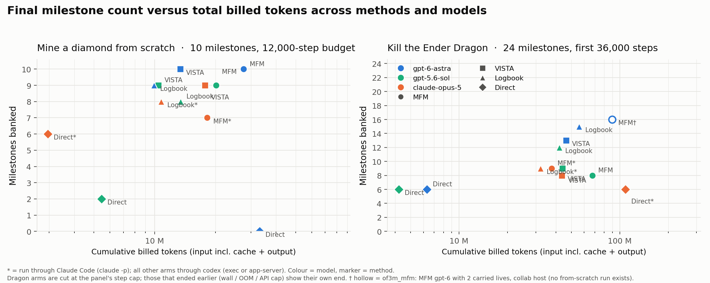
The Nether portal
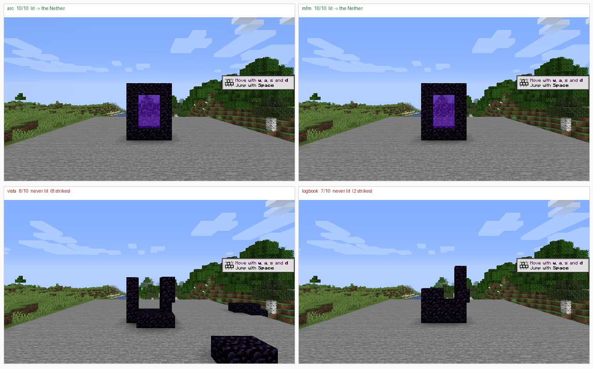
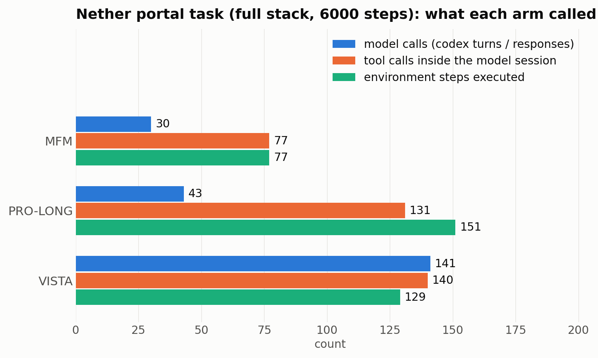
KiCad: mean reward over 24 tasks
| Method | gpt-6-astra | opus-5 | Model calls | Tokens (M) |
|---|---|---|---|---|
| Directd | 0.194 | 1,784 | 15.3 | |
| ProLong (log only) | 0.375 | 0.306 | 1,131 | 58.0 |
| VISTA | 0.347 | 1,145 | 41.8 | |
| Coding agent (arc) | 0.333 | 1,447 | 88.3 | |
| MFMe | 0.389 | 0.333 | 968 | 66.1 |
Calls and tokens are for the gpt-6-astra runs. d The direct arm never received its screenshot, so it is a text-only baseline in effect. e The MFM cell adds design-turn and conventions prompt levers that the ProLong cell does not carry. The differences between memory arms are one or two tasks out of 24.
Learning skills and improving on itself
The same files let the agent get better at a task. When a sequence of actions has worked
several times, it saves the sequence as a procedure under mine/procedures/ and
calls it from then on. A later life inherits those procedures, repairs them, and adds its
own. Because everything the agent knows beyond its weights is a file it wrote, what it
learned can be checked by reading the files and the turns that wrote them.
The clips below show procedures the agent wrote for itself being run, at game speed. The red square in the top right corner is lit while the procedure is in control.
Tunnelling, in the Diamond task
tunnel(n=7) Life 2 wrote it from the rate life 1 had measured and left in its notes, 54 ticks per block. Eight blocks advanced.Fighting, in the Ender Dragon task
blaze_fight(ticks=320) Life 6, which wrote the procedure, on the call that got its first blaze kill.ender_melee(ticks=300) Written in life 10, run in life 11: it finds the enderman against the Nether fog, swings every 12 ticks and shields between swings. Enderman killed.dragon_shot(ticks=360) Written in this life, in a probe that starts in the End: it tracks the dragon in the live view and fires the bow. Three shots; the dragon is mostly out of frame and only its boss bar shows.aim.py tool, and life 3 replays them by hand with the bow. Three shots, three crystals destroyed.perch_melee(ticks=395) Written in this life, later in the same run: it stands by the fountain, swings the sword every 12 ticks and waits for the dragon to perch. The dragon is in view throughout but never perches; it strafes the agent four times, health 20 to 3. No sword hits.The tunnelling procedure is a fixed script; the fighting ones read the live frame on every tick, which is how they follow a mob. In the crystal clip the red square marks the replayed steps, since no procedure is running. No run has landed a hit on the dragon itself. The tunnel clip is unlit, and it and the clips in the End were brightened so they can be seen. The Diamond life shown reached 6 of 10 milestones: the clip shows the tunnelling, not a diamond find.
Written after they work
No procedure is installed for the agent. Life 1 reaches iron by hand and saves
shaft_down only after the descent has succeeded repeatedly: "I've saved the
repeatedly successful descent sequence as a guarded procedure."
Repaired and judged
Life 2 changes one line of the inherited tunnel, validates it, and keeps
it. It reverts an inherited fall guard with a reason: the threshold "would interrupt
intentional shaft descent."
Facts change decisions
Lives 2 and 3 walk to the iron column life 1 found, confirm the floor against its frame, and mine their first iron at the same block, at steps 4,497 and 4,259 against 5,346.
The skill ledger of the carried chain
| Skill | Acquired | How | In later lives |
|---|---|---|---|
shaft_down (procedure) | life 1, turn 48 | written after the descent had worked by hand | inherited unchanged; iron pickaxe to y≤13 in about 850 steps against 2.2k to 3.4k fresh |
tunnel (procedure) | life 1, turn 50 | written after four manual cells worked | life 2 repairs one line (forward 6 to 12 ticks), validated, kept |
probe (procedure) | life 2, turn 56 | new; embeds "release one tick between attacks" | inherited by life 3 |
aim_speckles (procedure) | every life, turn 2 | adapted from the harness template | unchanged; the call that mined the diamond |
| lava guard (reflex) | life 1 | template, widened to own procedures and stationary mining | inherited; fired once in life 1, four times in life 3 |
| fall guard (reflex) | life 1 | template, rewritten to a 0.6-block threshold | life 2 reverts to the template with a stated reason |
| spruce approach | life 1 | discovered | verified by a then-now check; first log at step 168 against 431 to 679 |
| the iron column | life 1, step 5,346 | found while shafting | lives 2 and 3 mine their first iron at the same block |
| lava hazard; a dirt seal does not persist | life 1 | reflex firing and a failed seal | life 3 tunnels south of it |
| exhausted search lanes | lives 1, 2 | each life's own search record | life 3 prefers a fresh branch, where the diamond was |
Small n: the cards and the ledger describe one carried chain of three lives, set against two fresh lives. Every life starts in the same world at the same spawn, so the gain across lives mixes memory of the map with the procedures. The clips come from other runs.
KiCad: checking the screen against the plan
Task: change the supply of a 555 timer circuit from 9 V to 5 V. Both agents replace the power symbol through the Change Symbol dialog, and in both cases the dialog reports success while the value field still reads +9V.
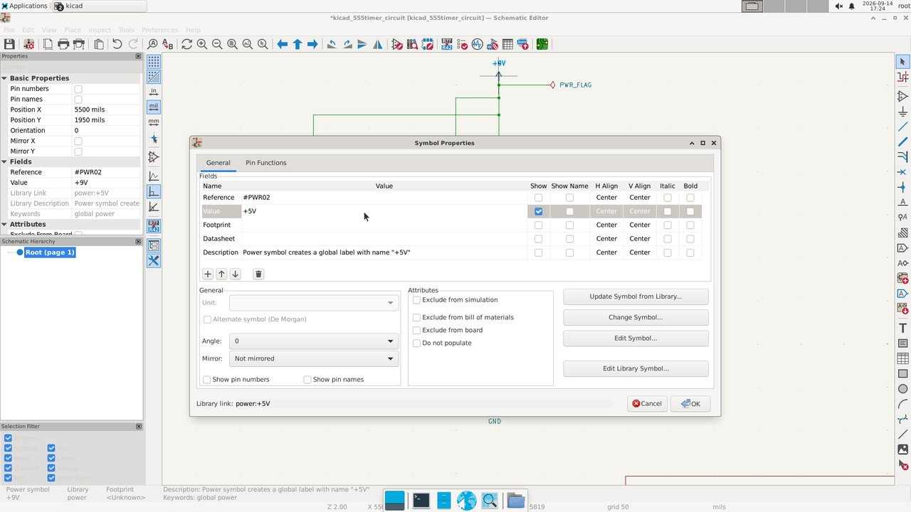
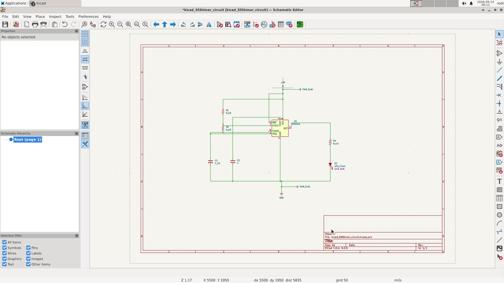
One of the four tasks where this MFM run beat this VISTA run. The two runs use different models, so the pair illustrates a behaviour and is not a controlled comparison.
What this does not show
- Small n. Most cells are single runs. The skill-learning evidence is one carried chain of three lives and two fresh replicates; two fresh lives already differ by a thousand steps at the iron pickaxe.
- One world. Every Minecraft run has the same world and spawn, so gains across lives mix map memory with procedural memory. The within-life curves are the part that does not depend on that.
- The Nether chain is the counterexample. Runs with two, three and four carried lives all scored 16/24 and all died in the same pocket around the portal. The record carried the procedures and not the lesson that mattered.
- MFM is not cheaper. On Minecraft it spends the most tokens of the memory arms, and on gpt-5.6-sol it trails the logbook and VISTA on the dragon task.
- Known departures from parity. A brief longer than 32 KiB is truncated for the logbook and MFM arms on Minecraft; the KiCad direct arm is blind; the KiCad MFM cell carries extra prompt levers; scores from before and after a session-policy change are not averaged. The repository README lists them in full.
BibTeX
@misc{su2026mfm,
title = {Multimodal Filesystem Memory for Long-Horizon Embodied Agents},
author = {Su, Chloe and Li, Jiahan and Qi, Zhenting and Cheng, Chaoran and Chen, Haoyu and Jun, Sejoon and Ye, Weirui and Du, Yilun},
year = {2026},
note = {Project page: https://github.com/Hither1/MFM}
}